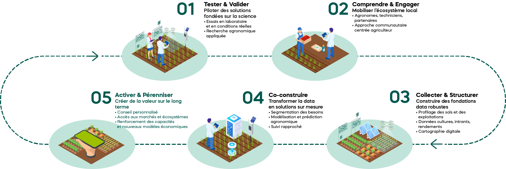

01 • Santé des sols

• Qui sommes-nous
Né
au sein du Groupe OCP et incubé par l’Université
Un modèle unique au croisement de la science et du terrain
Né
au sein du Groupe OCP et incubé par l’Université
Mohammed VI
Polytechnique (UM6P), Al Moutmir est un
modèle de
développement agricole inclusif, où la science,
l’innovation et
l’agriculteur convergent pour transformer durablement
les systèmes alimentaires.


Véritable interface entre la recherche,
l’innovation et le
terrain,
Al Moutmir crée une boucle d’apprentissage continue,
permettant
d’adapter les solutions aux réalités locales
et d’en
maximiser l’impact.
Notre ambition : construire un écosystème agricole durable,
data-driven et centré sur l’agriculteur.
Ce qui nous
anime
Notre Vision
Contribuer à la sécurité
alimentaire mondiale tout en
luttant contre le changement
climatique, en accompagnant
les
agriculteurs et en promouvant une
agriculture
durable,performante
et à hauts rendements, à l’échelle
internationale.

Ce qui nous
anime
Notre mission

Autonomiser les agriculteurs en
déployant une approche
centrée
sur leurs besoins, fondée
sur des
solutions personnalisées et des
services de conseil innovants, afin
d’accélérer l’adoption à
grande
échelle de pratiques
agricoles
durables, résilientes et
régénératives.
• Notre approche
Un modèle d’accompagnement data-driven, centré sur l’agriculteur
Notre approche repose sur une boucle continue, intégrant science, terrain et data pour générer un impact mesurable et durable.

• Notre expertise
Une
expertise intégrée

Une
expertise intégrée
au service de l'griculture
de précision
• Nos priorités
Nos priorités d’intervention
Pour répondre aux enjeux systémiques de l’agriculture, Al Moutmir concentre son action sur des leviers clés, au cœur de la performance, de la durabilité et de la résilience des systèmes agricoles.